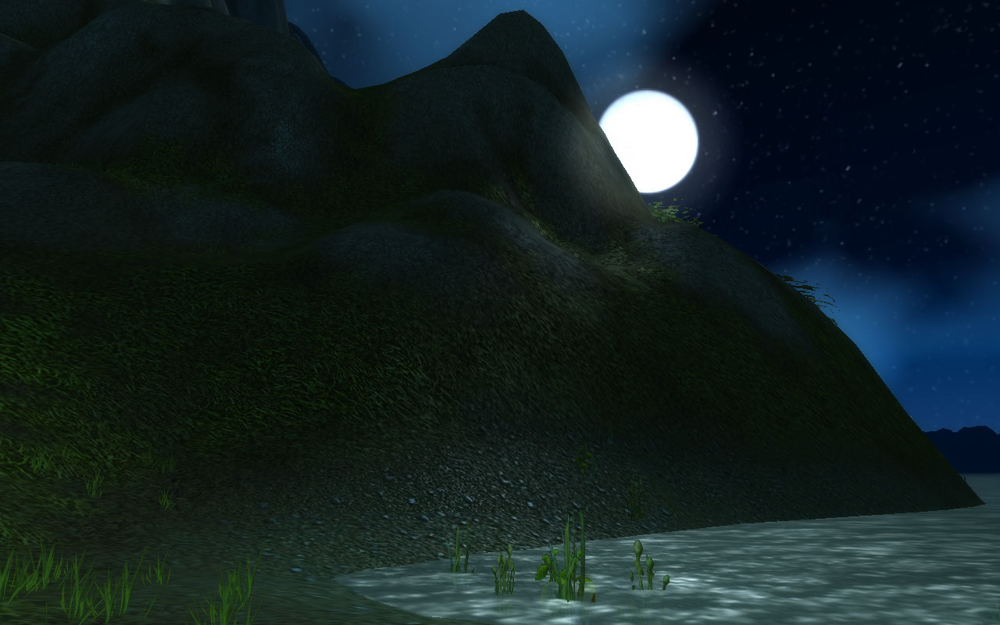
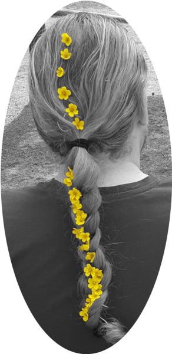
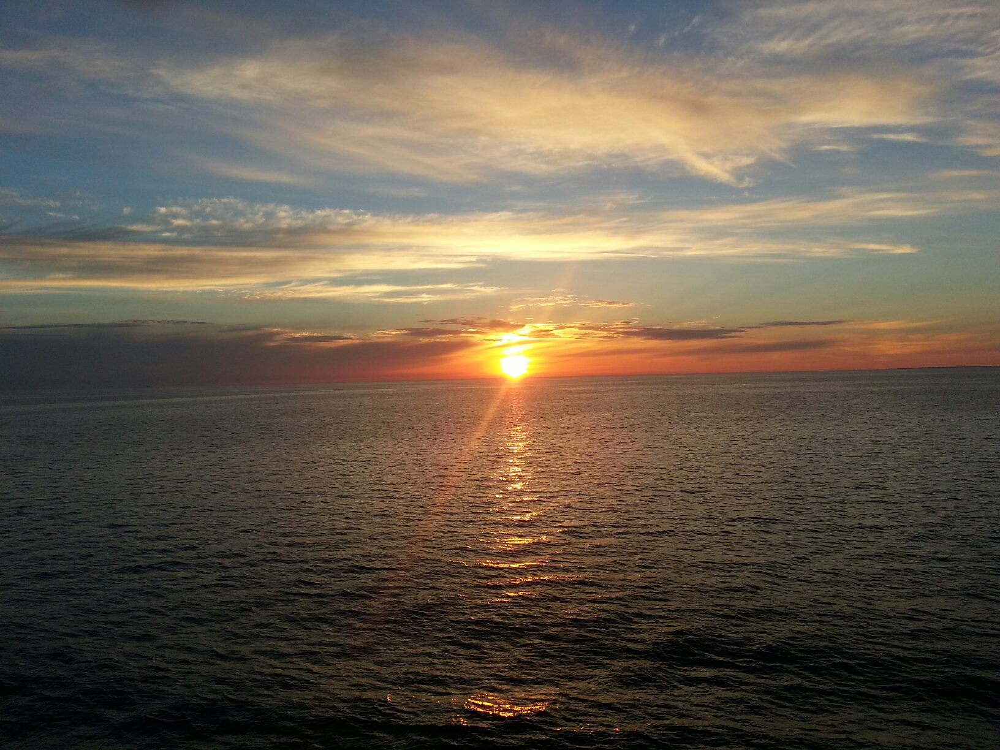

Born 89’, grown and raised in Ockelbo, located in the middle of Sweden. A small and peaceful village surrounded by green forests and with lakes of blue water my parents knew how to choose a child-friendly environment. I would eventually start my studies at Göranssonska Skolan and move in with 2 other students in the nearby city of Sandviken.
The school offered a technical program with many unique experiences among them 4 weeks of overseas work practice, mine was in India, Mehsana. Sadly during the last 6 months of my studies I ended up moving back in with my parents whom now had moved to the capital of Sweden, Stockholm. Making me just barley pass the exams but thankfully managing to graduate from Göranssonska 2008.
Being a small villager and finding yourself in the biggest city Sweden has to offer with no clear goal in mind, like studies or profession, was rather daunting. Finding a job wasn’t easy for the inexperienced and being 18 years old with no real chores or responsibilities and a much too comfortable life at home I stayed unemployed for almost a year. That’s not to say I was inactive for it was under this time that I rediscovered parts of who I am.
To say that gaming is important for me would be an understatement. Gaming made me explore the world and move to a new country. Gaming put people in my path, many whom I today call friends. Gaming made me meet one lovely woman that today is my wife. Gaming inspired me to go for a new career and start studying. Gaming made me a parent.
It was that during my year of unemployment I experienced high end gaming, raiding and racing for server first titles in the game World of Warcraft. Trying to organize 25 people at the same time, while keeping track of raid mechanics and performance at a personal level made me feel valuable and part of something the same way a profession would. As I started to restructure my life, get a job and meet new people I had a chance encounter in World of Wacraft high up in the floating city of Dalaran.
The love story of Ayoka and Azraul could possibly cover many pages in Daggerspines’ server files, a story I’ll gladly tell over a cup of coffee.
Moving from one city to another I soon found myself in Finland looking for work. When I moved I had no idea there was a whole society built around the Swedish language and so finding a job was simple. I started working in a school environment as it was what I knew best, they pay wasn’t much but as a first employment it was enough to go around. And before that first year was over the news came, I was going to be a father and so we had to look for a more stable income and that’s when my 7-year long trip through daycare started.
Working at daycare gave me memories I’ll cherish forever, moments I’ll never forget and people I’ll always love.
Old people say times goes faster the older you get, I’ll say you forget what happens once you have a kid because first you’re sleep depraved and suddenly they start school but somehow you’re still complaining about sleep. Odd how time flies.
Thank you for reading and perhaps the story is longer when you return next time.